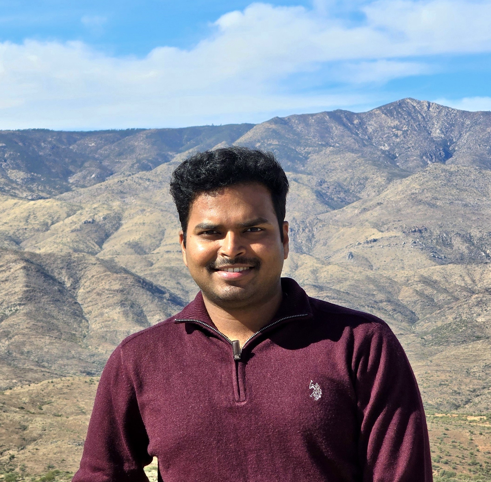

Hi, I'm Nithin Veerendranath K.
I am a Mechanical Engineer with PhD-level research experience focused on translating computational mechanics, CAD design, and simulation into industry-ready engineering solutions. My work spans nonlinear FEA, material modeling, scientific computing, and rapid prototyping to support data-driven mechanical design decisions.
What I work on